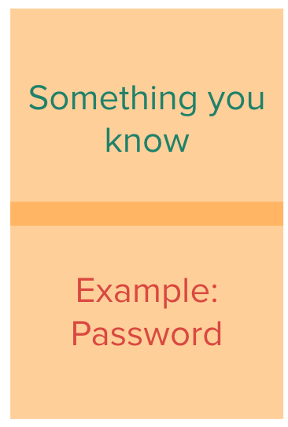
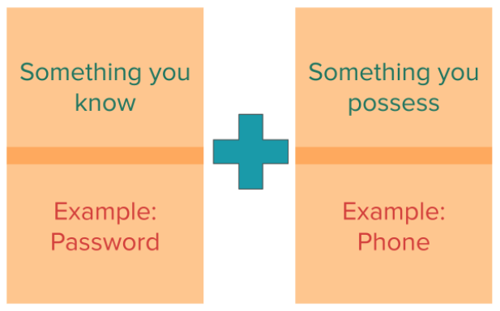
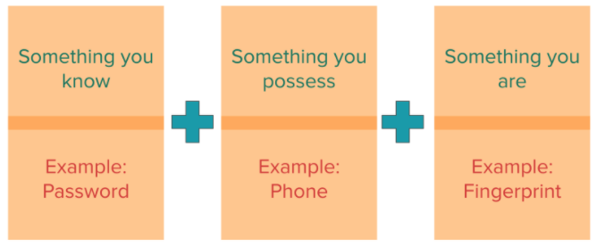

Lesson 7 - Passwords, Passkeys, and Two-Factor
At the end of this lesson, you will be able to:
- Explain how password reuse enables credential-stuffing attacks
- Describe how uniqueness, length, and unpredictability contribute to password strength
- Explain how a password manager generates and stores distinct passwords
- Compare common forms of multifactor authentication with phishing-resistant passkeys
Most of this unit has been about tricks: phishing, scams, and false information. Last lesson we looked at the math that keeps messages secret. Now we put it to work on the locks themselves. How do you actually protect an account? That means passwords, password managers, multifactor authentication, and passkeys.
Think about how many accounts you have: email, banking, photos, a health portal, a dozen shopping sites, &c. They're all protected by some kind of login. And a weakness in one of them can spill over into the others, especially if you've used the same password more than once.
Why reusing passwords is risky
Short, predictable passwords like password123, your pet's name, or your birthday are easy to guess. But reusing a password causes a second problem that's even worse: when one service gets broken into, your other accounts go down with it.
Let's see how that plays out. Say some old forum you joined years ago gets breached, and your email address and password end up in the hands of attackers. You don't care about that forum at all! But if you used the same password for your email or your bank, they now have the key to those too.
And attackers don't try this by hand. They write programs that take a leaked email-and-password pair and automatically try it on hundreds of other sites. That's called credential stuffing, and it only works because so many people use the same login in more than one place. (It's a loop over a list, the same kind of loop we've been writing since Unit 5!)
So what stops credential stuffing? Giving every account its own password or passkey. Then a breach at one service has nothing to hand anyone for another.
What actually makes a password good
So what makes a password strong? Mostly length and unpredictability, not checking boxes like "one capital letter, one number, one symbol." Why length? Because an attacker guessing passwords has to try the possibilities one after another, and every extra character multiplies the number of possibilities. It's the Unit 1 idea that each extra bit doubles the number of patterns, just with letters instead of bits. A random 16-character password has astronomically more possibilities than an 8-character one, even a fancy one. Swapping a for @ in a short word barely helps, because attackers know that trick too. A password manager can generate a long random password for you, and you never have to remember it.
For the few passwords you do have to memorize, a passphrase made of several randomly chosen words gives you length in a form you can remember. The words need to be truly random (not your favorite song lyric!), and the phrase shouldn't be reused anywhere. And please don't copy an example passphrase you saw published somewhere, including in a lesson like this one.
Memorizing a different strong password for every single account isn't realistic for anybody. That's what a password manager is for.
Password managers
A password manager generates a long, random, unique password for each service, stores them all in an encrypted vault, and fills in the right one when you're on the matching site or app. You protect the manager itself with one strong password, your device's lock, or both.
That's what makes "a different password everywhere" actually doable, and it shuts down credential stuffing from a breached site. Password managers come built into phones and browsers, and there are standalone ones too. Whichever kind you pick, get it from a reputable provider and keep it updated.
You might be thinking, "Wait, isn't it risky to put all my passwords in one place?" It's a fair question! A password manager does gather up plenty of sensitive information, so its own security matters. Reputable ones encrypt the vault, and they're designed so that even the company running them can't read your passwords as ordinary text. Protect the manager with a strong, unique password and the best multifactor option it supports, and keep its recovery information up to date. For most people, that's much safer, and much more practical, than reusing a few memorized passwords everywhere.
Two-factor authentication
Two-factor authentication (2FA) asks for two different kinds of evidence that it's really you. Usually that's something you know, like a password, plus something you have, like your phone or a security key. MFA, multifactor authentication, is the broader term for the same idea. The point is that a stolen password, all by itself, isn't enough to get in.
The second factor might be a one-time code, an "is this you?" approval tied to a specific login, a physical security key, or a fingerprint or face check on your device.



These aren't all equally strong, though. Text-message codes can be redirected if someone takes over your phone number. How? A scammer calls your phone company, pretends to be you, and talks them into moving your number to a SIM card the scammer controls. That's called SIM swapping, and after it, your codes go straight to them. And any code you type in by hand, whether it came by text or from an authenticator app, can be relayed by a phishing site that's passing your login along to the real one in real time. Push approvals can be abused too, which is why you should never approve a login you didn't start yourself. A passkey or hardware security key that's tied to the real site's domain is much better at resisting phishing. Still, if a code is the only second factor a service offers, use it! It's far better than a password alone.
Passkeys
A passkey gets rid of the shared password entirely and uses a public/private key pair instead, just like the ones from Lesson 6. When you log in, your device uses the private key to sign a challenge from the site (a digital signature, from last lesson), usually after you confirm with a fingerprint, a face scan, or your device PIN.
The neat part is that the private key never gets sent to the service, and the passkey only works on the real site's domain. Your device checks the site's address itself, so it can't be fooled by a lookalike page the way human eyes can. That means a properly built passkey can't be phished, and if the service's database gets breached, there's no reusable password in it to steal. You still need to keep your devices and account recovery secure, of course. But when a service you trust offers a passkey, it's generally a great choice.
When a company gets breached
Companies get breached sometimes, and there's nothing you personally can do to stop a service from being hacked. What you can control is how you respond, and that depends on what the breach notice says was exposed.
Have I Been Pwned can tell you whether an email address shows up in its database of known breaches, and what kinds of data those breaches exposed. (It won't show you a password, so don't worry about that.) If you find yourself in there, follow the affected service's instructions, change any current or reused password connected to the breach, look over your account activity, and turn on stronger authentication.
Try it: Take this fictional case. Morgan reuses the email password on other sites, has MFA turned off, and has an old phone number listed for recovery. Put together a protection and recovery plan for Morgan, including where Morgan should privately store backup codes. Or review your own email settings privately and plan what you'd change. Before turning on any new protection, figure out how you'd get back in if you got locked out! You don't have to change any account for this exercise, or share any passwords, recovery addresses, or codes.
Coming up next: Your Privacy and Your Data examines information collected during ordinary use and the choices available for limiting it.